End to end automation with CircleCI and ArgoCD Part 3 – ArgoCD
ArgoCD is a Continuous Delivery tool designed for Kubernetes, This will be used to take the generated YAML file from the CI process and apply it to two clusters.
In this section, the following part of the overall CI/CD pipeline being implemented is depicted below.
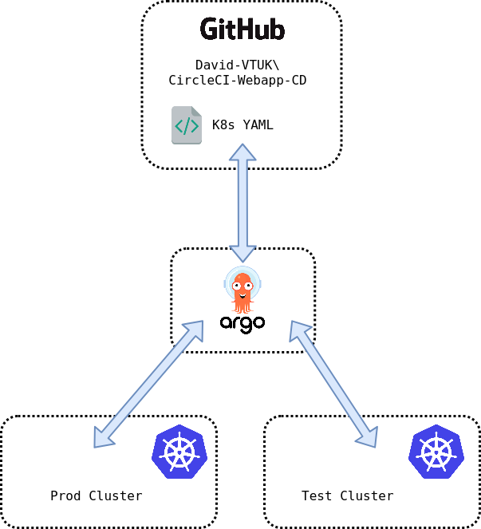
- ArgoCD will monitor for changes in the
Webapp-CDGithub Repo. - All changes are automatically applied to the
Testcluster. - All changes will be staged for manual approval to
Prodcluster
Install ArgoCD
ArgoCD has extensive installation documentation here. For ease, a community Helm chart has also been created.
Add Clusters to ArgoCD
I’m using Rancher deployed clusters which require a bit of tweaking on the ArgoCD side. The following Gist outlines this well: https://gist.github.com/janeczku/b16154194f7f03f772645303af8e9f80. However, other clusters can be added with a argocd cluster add, which will leverage the current kubeconfig file. For this environment, both Prod and Test clusters were added.
If done correctly, the clusters should be visible in Settings > Clusters in the ArgoCD web UI and argocd cluster list in the CLI:
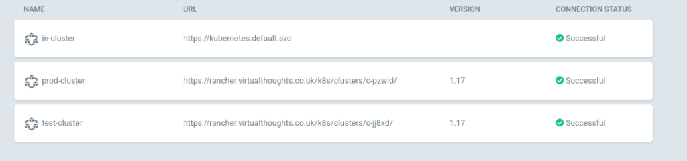
Add Repo to ArgoCD
In ArgoCD navigate to Settings > Repositories:
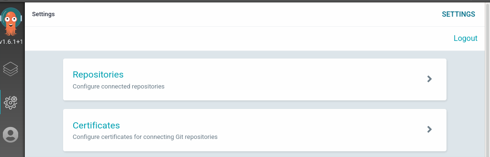
You can connect to a repo in one of two ways - SSH or HTTPS. Fill in the name URL and respective authentication parameters:
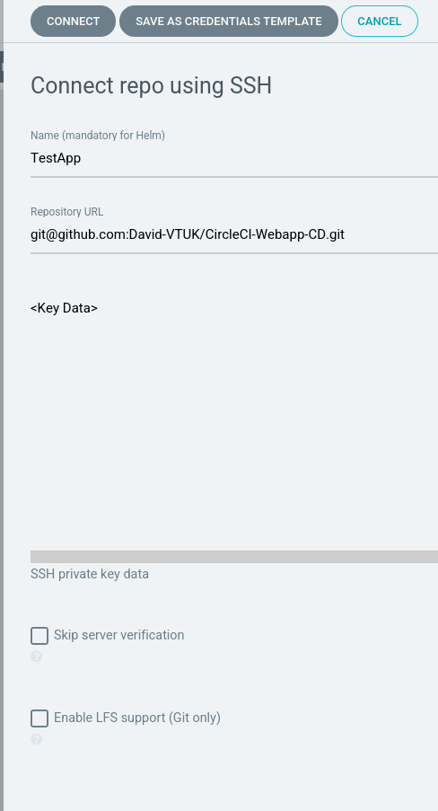
With all being well, it will be displayed:
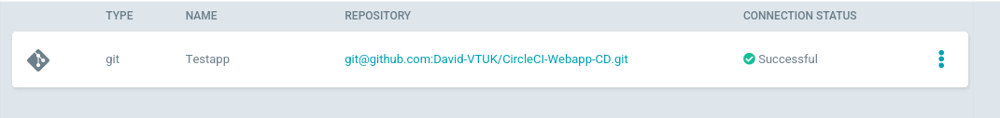
Create ArgoCD Application
From the ArgoCD UI, select either New App or Create Application
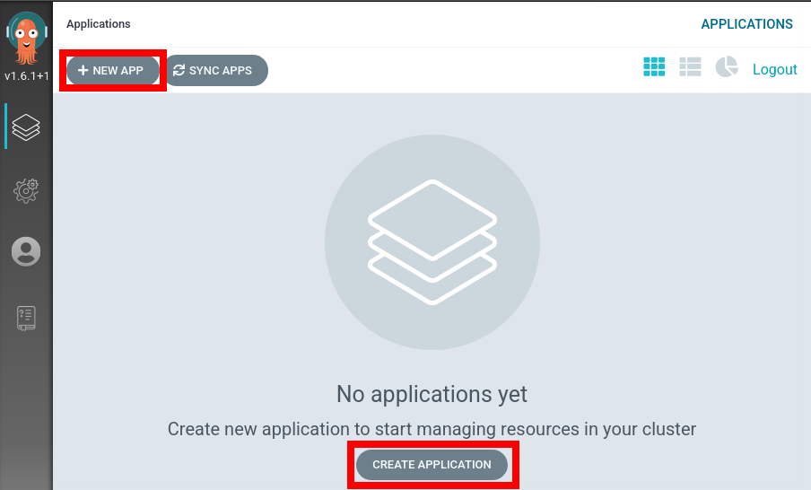
Application Settings - General
Application Name: web-test
Project: Default (For production environments a separate project would be created with specific resource requirements, but this will suffice to get started with.)
Sync Policy: Automatic
Application Settings - Source
Repository URL: Select from dropdown
Revision: Head
Path: .
Application Settings - Destination
Cluster: Test
Namespace: Default (This is used when the application does explicitly define a namespace to reside in).
After which our application has been added:
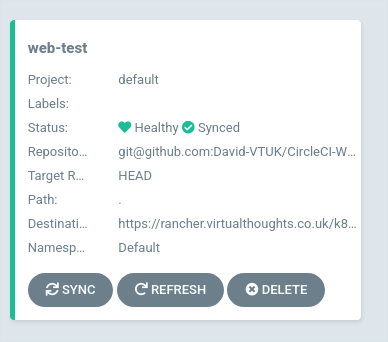
Selecting the app will display its constituent parts
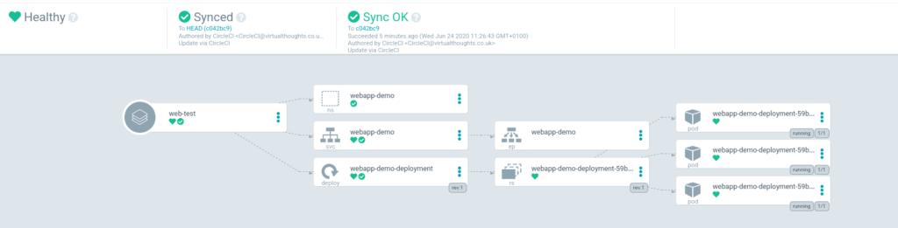
Repeat the create application process but substitute the following values:
Application Name : web-prod
Sync Policy: Manual
Cluster: Prod
After which, both the prod and test applications will be shown
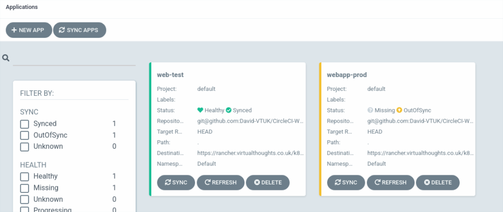
webapp-prod is noted as being OutOfSync - this is expected. In this environment, I don’t want changes to automatically propagate to prod, but only to test. Clicking “Sync” will rectify this:
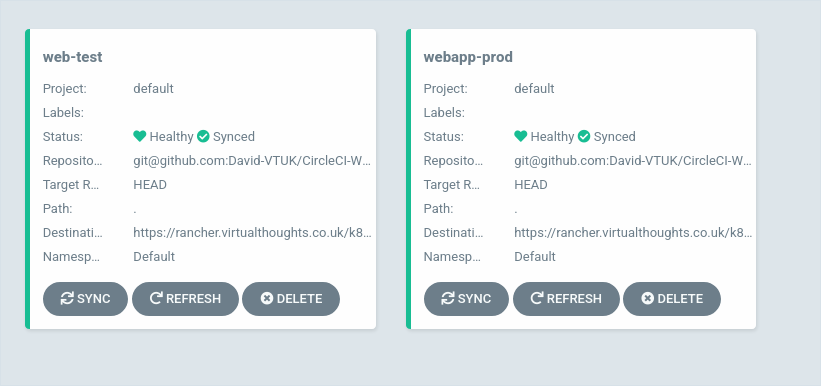
Testing
Now everything is in place the following should occur during a new commit to the source code:
- Automatically invoke CircleCI pipeline to Test, Build and Publish the application as a container to Dockerhub
- Construct a YAML file using the aforementioned image
- ArgoCD detects a change in the manifest and:
- Applies it to Test immediately
- Reports Prod is now out of sync.
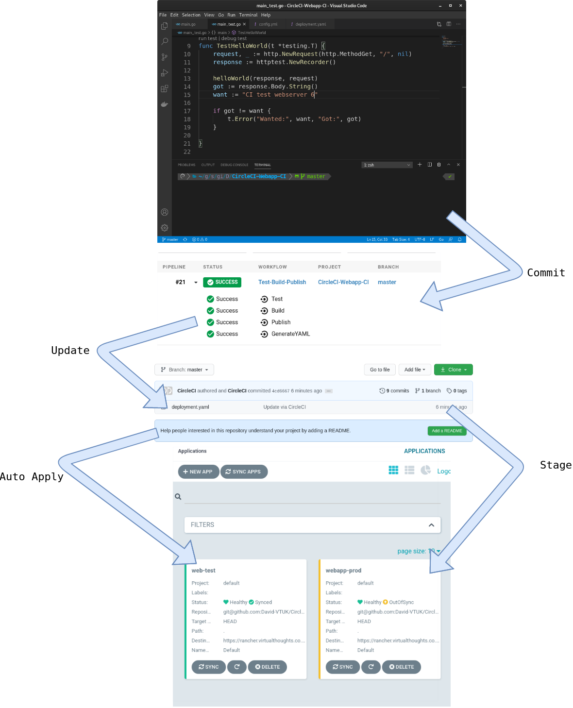
As expected, changes to the source code have propagated into the Kubernetes clusters it is residing on.